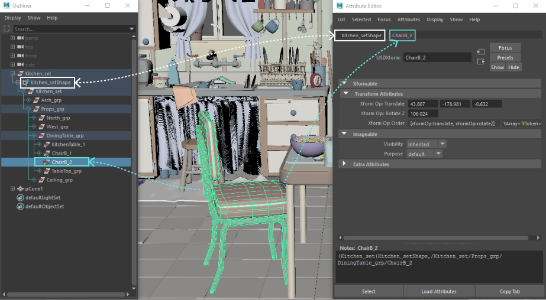

General USD menu items in Maya are indicated by . This icon can be found in the following interface navigation paths:
USD stage menu items are indicated by . This icon can be found in the following interface navigation paths:
proxyShape nodeBy default, selecting a USD object in the Viewport selects the object in the Outliner and also highlights up to the proxyShape node. The proxy shape node also appears to the left of selected object in the Attribute Editor. In the following example, the stage or proxyShape node, kitchen_set_usdShape appears in the Attribute Editor beside the selected object, ChairB_2.

You can move prims in the Viewport using ALT + arrow keys. This keyboard function will move USD data, just as it does Maya data.